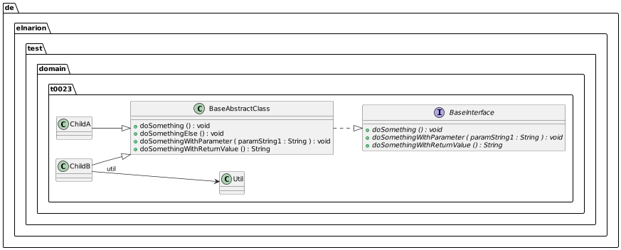

additionalPlantUMLConfigs
Description
With the help of this configuration parameter you are able to add any PlantUML configuration or even normal text to the beginning of the generated PlantUML diagram. The parameter is a list of strings and every string is a new line in the PlantUML diagram.
If this parameter is not added or if the parameter is an empty list, nothing is added to the diagram.
You just have to add this configuration with the withAdditionalPlantUMLConfigs method of the PlantUMLClassDiagramConfigBuilder.
Example
Here is an example from the JUnit tests using this configuration parameter:
List<String> scanPackages = new ArrayList<>();
scanPackages.add("de.elnarion.test.domain.t0023");
List<String> additionalPlantUmlConfigs = new ArrayList<>(); (1)
additionalPlantUmlConfigs.add("left to right direction");
additionalPlantUmlConfigs.add("scale 2/3");
PlantUMLClassDiagramConfig config = new PlantUMLClassDiagramConfigBuilder(scanPackages)
.addAdditionalPlantUmlConfigs(additionalPlantUmlConfigs).build(); (2)
PlantUMLClassDiagramGenerator generator = new PlantUMLClassDiagramGenerator(config);
String result = generator.generateDiagramText();
String expectedDiagramText = IOUtils
.toString(Objects.requireNonNull(classLoader.getResource("class/0023_additional-plant-uml-configs.txt")), StandardCharsets.UTF_8);
assertNotNull(result);
assertNotNull(expectedDiagramText);
assertEquals(expectedDiagramText.replaceAll("\\s+", ""), result.replaceAll("\\s+", ""));which is rendered this way:

and produces this PlantUML diagram text:
@startuml
left to right direction
scale 2/3
class de.elnarion.test.domain.t0023.BaseAbstractClass {
{method} +doSomething () : void
{method} +doSomethingElse () : void
{method} +doSomethingWithParameter ( paramString1 : String ) : void
{method} +doSomethingWithReturnValue () : String
}
interface de.elnarion.test.domain.t0023.BaseInterface {
{method} {abstract} +doSomething () : void
{method} {abstract} +doSomethingWithParameter ( paramString1 : String ) : void
{method} {abstract} +doSomethingWithReturnValue () : String
}
class de.elnarion.test.domain.t0023.ChildA {
}
class de.elnarion.test.domain.t0023.ChildB {
}
class de.elnarion.test.domain.t0023.Util {
}
de.elnarion.test.domain.t0023.BaseAbstractClass ..|> de.elnarion.test.domain.t0023.BaseInterface
de.elnarion.test.domain.t0023.ChildA --|> de.elnarion.test.domain.t0023.BaseAbstractClass
de.elnarion.test.domain.t0023.ChildB --> de.elnarion.test.domain.t0023.Util : util
de.elnarion.test.domain.t0023.ChildB --|> de.elnarion.test.domain.t0023.BaseAbstractClass
@enduml